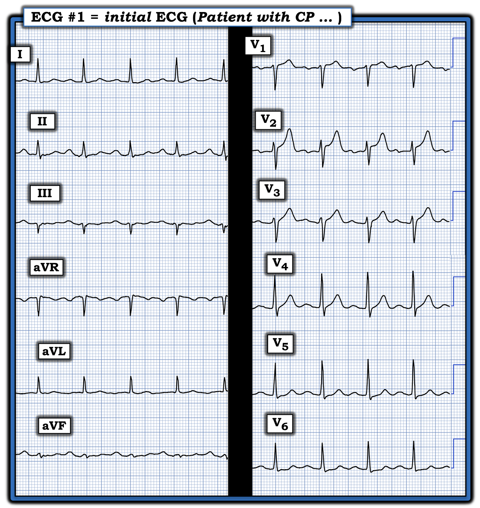
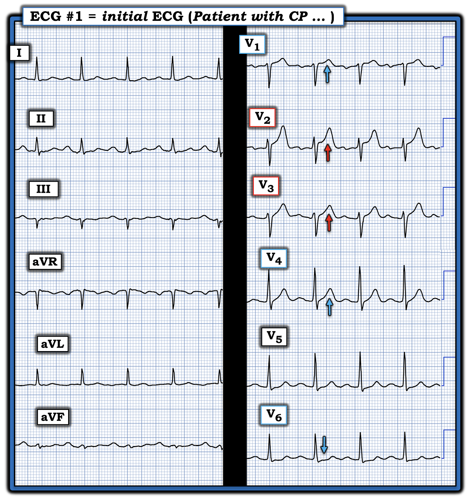
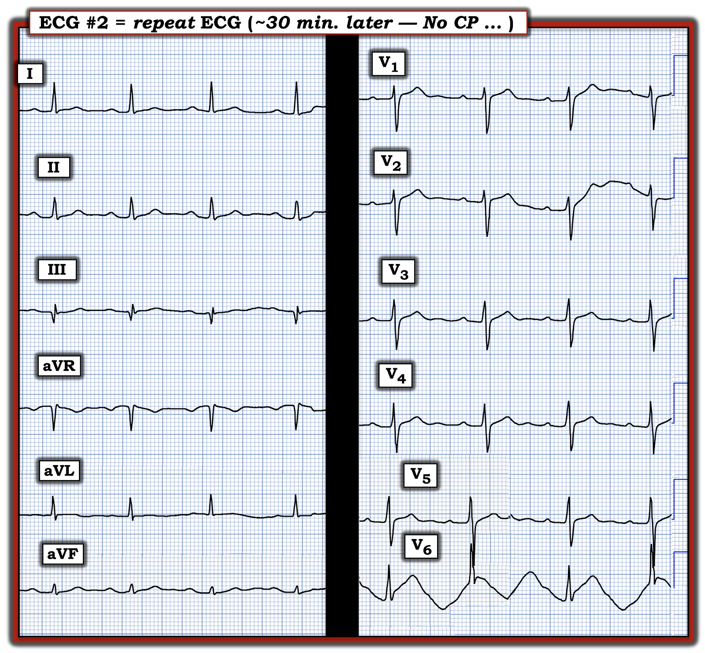
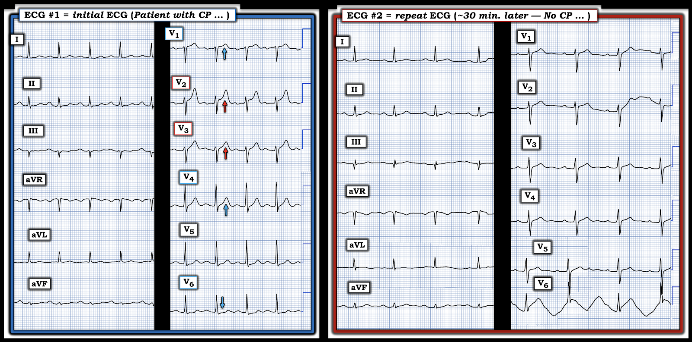

ECG Blog #485 — 30 phút sau
Bệnh nhân hôm nay là một người đàn ông trung niên trước đây khỏe mạnh, kể lại một cơn CP (đau ngực – Chest Pain) ngắn khi đang đi bộ, đỡ khi nghỉ — rồi một ngày sau CP tái phát, lần này xảy ra cả khi nghỉ.
- Các chi tiết thêm về thời điểm và thời gian kéo dài CP của bệnh nhân — cũng như mức độ nặng tương đối của CP vào thời điểm ghi điện tâm đồ ở Hình-1 — chưa rõ.
- hs-Troponin ban đầu âm tính.
CÂU HỎI:
- Với bệnh sử này — Bạn sẽ diễn giải điện tâm đồ #1 như thế nào?


SUY NGHĨ Ban đầu CỦA TÔI:
Bệnh sử CP mới xuất hiện, đủ nặng để khiến bệnh nhân phải đến ED (khoa cấp cứu – Emergency Department) — luôn là điều đáng lo ngại. Dù vậy — thật khó rút ra kết luận về khả năng có một biến cố cấp tính chỉ từ bệnh sử được cung cấp. Dù vậy:
- Điện tâm đồ ban đầu không bình thường.
- Nhịp xoang, tần số ~90 lần/phút. Mọi khoảng và trục đều bình thường. Không có lớn buồng tim.
Về Thay đổi Q-R-S-T:
- Sóng Q — không có (Có một sóng dương nhỏ ở đầu = sóng r ở chuyển đạo III).
- Tăng tiến sóng R — có lẽ phù hợp (dù việc sóng R ban đầu cao hơn ở chuyển đạo V2 so với V3 gợi ý có thể đã đặt sai vị trí giải phẫu của 2 điện cực này).
Về
Thay đổi đoạn ST-sóng T — Điều này thực sự đáng lo ngại! (Xem Hình-2):
- Ở bệnh nhân có bệnh sử CP mới xuất hiện này — tôi diễn giải ST-T ở chuyển đạo V2 là tối cấp cho đến khi chứng minh được điều ngược lại (tức là to ra không tương xứng so với kích thước khiêm tốn của QRS ở chuyển đạo V2 này).
- Trong bối cảnh CP mới + ST-T tối cấp ở chuyển đạo V2 — tôi diễn giải chuyển đạo V3 kế bên cũng tối cấp (tức là "đầy đặn" hơn ở đỉnh và rộng hơn ở đáy so với dự kiến, xét kích thước khiêm tốn của QRS ở chuyển đạo V3 này).
- ĐIỂM THEN CHỐT (PEARL) #1: Trong những ca như thế này — tôi bắt đầu diễn giải bằng cách tìm 1 hoặc 2 chuyển đạo mà tôi biết chắc là bất thường rõ (ở đây là chuyển đạo V2 và V3, rõ ràng là tối cấp!). Khi đó "ngưỡng" để tôi diễn giải các chuyển đạo khác trên bản ghi này là bất thường được hạ thấp, nhất là với các chuyển đạo kế bên (trong ca này — là chuyển đạo V1 và V4!).
- ĐIỂM THEN CHỐT #2: Ở bệnh nhân không có dấu hiệu LVH trên điện tâm đồ — ST chênh lên nhẹ-nhưng-có-thật kèm sóng T dương cao bất ngờ ở chuyển đạo V1 là chắc chắn bất thường! Với CP mới + sóng T tối cấp nay ở chuyển đạo V1,V2,V3 (với ST chênh lên bắt đầu từ chuyển đạo V1) — điều này gợi ý "thủ phạm" là LAD đoạn gần cho đến khi chứng minh được điều ngược lại.
- ĐIỂM THEN CHỐT #3: "Chuyển đạo kế bên" cuối cùng — là chuyển đạo V4. Nếu nhìn riêng chuyển đạo V4 — có lẽ tôi chưa chắc đã gọi nó là "bất thường". NHƯNG — trong bối cảnh CP mới + sóng T tối cấp ở chuyển đạo V1,V2,V3 — tôi diễn giải chuyển đạo V4 kế bên cũng tối cấp (đáy sóng T này rộng-hơn-mức-tôi-dự-kiến với một ST-T bình thường).
- Điểm MẤU CHỐT: Tôi thấy hữu ích khi luôn cố gắng kể một "câu chuyện" lúc diễn giải điện tâm đồ. Vì vậy, với bệnh sử lâm sàng CP mới + sóng T tối cấp ở chuyển đạo V1,V2,V3 — "ngưỡng" để tôi đánh giá chuyển đạo V4 kế bên cần được hạ thấp. Xét bối cảnh này — tôi diễn giải đáy sóng T rộng-hơn-dự-kiến mà ta thấy ở chuyển đạo V4 là bất thường (tức là tạo thành sóng T tối cấp thứ 4 liên tiếp, từ chuyển đạo V1-đến-chuyển đạo V4).
- ĐIỂM THEN CHỐT #4: Với bối cảnh trên — ST thẳng đuỗn và ST chênh xuống nhẹ-nhưng-có-thật mà ta thấy ở chuyển đạo V6 trong Hình-2 là có thật! Nhiều khả năng đây là xoáy trước tim (Precordial "Swirl") (tức là ST-T tối cấp ở các chuyển đạo trước, với ST chênh lên bắt đầu từ chuyển đạo V1 + ST chênh xuống ở chuyển đạo V6 — như đã bàn chi tiết trong ECG Blog #380).
- Cuối cùng — ST dẹt kín-đáo-nhưng-chắc-chắn-có kèm điểm J chênh xuống nhẹ cũng thấy ở chuyển đạo V5. Tôi ngờ rằng lý do dấu hiệu ở chuyển đạo V5 kín đáo như vậy — là vì đây là một "chuyển đạo chuyển tiếp", nằm giữa các ST-T tối cấp ở chuyển đạo V1-đến-V4 và ST chênh xuống mà ta thấy ở chuyển đạo V6.
CÂU HỎI:
Còn các chuyển đạo chi trong Hình-2 thì sao?
- Hãy NHÌN lại điện tâm đồ #1. BẠN có thấy bất thường nào ở bất kỳ chuyển đạo chi nào ủng hộ chẩn đoán nghi ngờ của tôi là OMI do LAD đoạn gần không?


TRẢ LỜI:
Nếu không có bệnh sử CP mới và các dấu hiệu ST-T đã mô tả ở trên mà ta thấy ở các chuyển đạo ngực của điện tâm đồ #1 — có lẽ tôi đã gọi các dấu hiệu ST-T ở các chuyển đạo chi của bản ghi này là "không đặc hiệu". NHƯNG — trong bối cảnh của ca hôm nay — chắc chắn có các dấu hiệu ST-T bất thường ở một số chuyển đạo chi:
- Dấu hiệu nổi bật nhất trong Hình-2 là ở chuyển đạo aVF. Dù phức bộ QRS rất nhỏ ở chuyển đạo này — không có gì phải nghi ngờ rằng đoạn ST dẹt bất thường. Cũng có phần cuối sóng T dương kín-đáo-nhưng-có-thật ở chuyển đạo aVF này.
- Ở mức độ ít hơn — ST dẹt tương tự kèm phần cuối sóng T dương cũng thấy ở 2 chuyển đạo dưới còn lại ( = chuyển đạo II và III).
- XIN NHẤN MẠNH: Nếu nhìn riêng — tôi đã gọi các dấu hiệu ST-T ở chuyển đạo dưới này là "không đặc hiệu". Nhưng trong bối cảnh các dấu hiệu ở chuyển đạo ngực bất thường rõ — các thay đổi ST-T soi gương này ở các chuyển đạo dưới ủng hộ khả năng đang tắc cấp LAD đoạn gần.
- ĐIỂM THEN CHỐT #5: Một khi đã xác định được một hoặc hai chuyển đạo chắc chắn bất thường ở bệnh nhân có CP mới (như chuyển đạo V2 và V3) — càng có thêm nhiều chuyển đạo biểu hiện dấu hiệu ST-T bất thường — thì càng ủng hộ giả thuyết cấp tính OMI. Trong Hình-2 — ít nhất 9/12 chuyển đạo có hình ảnh ST-T bất thường.
= = = = = = = = = = = = = = = = = = = =
CA BỆNH TIẾP DIỄN:
Troponin ban đầu trong ca hôm nay âm tính. Quyết định được đưa ra là không kích hoạt phòng thông tim, dựa trên bệnh sử nêu trên, Troponin ban đầu âm tính — và điện tâm đồ ban đầu ở Hình-1.
- Trong khoảng ~30 phút tiếp theo — CP của bệnh nhân hết. Vào lúc này — một điện tâm đồ ghi lại được thực hiện (trình bày dưới đây ở Hình-3).
- Bác sĩ tim mạch được liên hệ đầu tiên không cho rằng có chỉ định thông tim vào lúc này vì: i) Các bất thường ST-T ở chuyển đạo ngực không còn trên điện tâm đồ #2; — ii) CP của bệnh nhân đã hết; và, iii) Troponin ban đầu âm tính.
CÂU HỎI:
- BẠN có đồng ý với lập luận của bác sĩ tim mạch đầu tiên này để không tiến hành thông tim không?
- Bạn giải thích thế nào về việc các dấu hiệu ST-T bất thường thấy trên điện tâm đồ ban đầu đã biến mất?


= = = = = = = = = = = = = = = = = = = =
TRẢ LỜI:
Lập luận nêu trên của bác sĩ tim mạch được hội chẩn đầu tiên, làm lý do để không thông tim sớm trong ca hôm nay — làm nổi bật một loạt điểm MẤU CHỐT và các quan niệm sai lầm.
- Như các nguồn nêu trong PHẦN BỔ SUNG dưới đây đã điểm lại — sinh lý bệnh của quá trình tiến triển OMI cấp thường bao gồm một giai đoạn tái tưới máu tự phát, không phụ thuộc vào bất kỳ biện pháp điều trị nào. Giai đoạn tái tưới máu tự phát này đôi khi chỉ thoáng qua — trước khi xảy ra tắc lại tự phát.
- NẾU người thầy thuốc đối chiếu cẩn thận sự hiện diện (và mức độ nặng tương đối) của CP với thời điểm ghi từng điện tâm đồ liên tiếp — thường ta có thể xác định được khi nào tái tưới máu tự phát đã xảy ra, vì: i) Điều này thường đi kèm với giảm (nếu không phải là hết hẳn) CP; và, ii) Các thay đổi điện tâm đồ cấp (tức là ST chênh lên và chênh xuống) giảm đi, thậm chí trở về bình thường, trên đường hình thành hình ảnh điển hình của sóng T tái tưới máu (tức là sóng T đảo ngược ở các chuyển đạo trước đó có ST chênh lên). Tất cả những gì (các) thầy thuốc điều trị cần làm — là đối chiếu sự hiện diện (và mức độ nặng tương đối) của triệu chứng CP với các điện tâm đồ liên tiếp. Làm như vậy thường khiến chẩn đoán OMI cấp trở nên hiển nhiên.
Đối chiếu các khái niệm trên với điện tâm đồ ghi lại:
- ĐIỂM THEN CHỐT #6: Để dễ diễn giải điện tâm đồ ghi lại trong ca hôm nay ( = điện tâm đồ #2) — tôi đã đặt nó cạnh điện tâm đồ #1 ở Hình-4. Thực tế lâm sàng là trừ khi 2 điện tâm đồ cần so sánh được xem cạnh nhau — những khác biệt kín đáo giữa 2 bản ghi sẽ bị bỏ sót.
- Các khác biệt chính giữa điện tâm đồ #1 và điện tâm đồ #2 — thấy ở các chuyển đạo ngực. Các sóng T tối cấp thấy trước đó ở các chuyển đạo trước gần như đã biến mất hoàn toàn — sự cải thiện ngoạn mục của hình ảnh điện tâm đồ này xảy ra trong vòng 30 phút sau khi ghi điện tâm đồ #1, đi kèm với việc CP hết!
- ĐIỂM THEN CHỐT #7: Việc các thay đổi ST-T tối cấp gần như biến mất hoàn toàn mà ta thấy ở Hình-4, tương ứng với việc CP hết hoàn toàn: i) Là một thay đổi điện tâm đồ "động" (dynamic) — càng ủng hộ thêm một biến cố tim đang tiến triển cấp; và, ii) Gợi ý mạnh rằng động mạch "thủ phạm" đã bị tắc cấp khi bệnh nhân có CP (tức là vào thời điểm ghi điện tâm đồ #1) — nhưng nay động mạch thủ phạm đã mở ra tự phát, đi kèm với sự cải thiện ST-T động này, thấy cùng lúc CP của bệnh nhân hết.
- "Tin tốt" — là động mạch "thủ phạm" nay đã mở.
- "Tin không tốt lắm" — là cái gì tự mở ra — thì có thể tự đóng lại vào bất kỳ lúc nào trừ khi được thông tim sớm kèm PCI để bảo đảm động mạch thủ phạm luôn thông.
- ĐIỂM THEN CHỐT #8: Việc Troponin ban đầu trong ca hôm nay âm tính không loại trừ được biến cố cấp (như bác sĩ tim mạch đầu tiên của ca này đã mặc định). Hơn 25% bệnh nhân STEMI cấp có giá trị hs-Troponin ban đầu ( = troponin độ nhạy cao) dưới ngưỡng chẩn đoán nhồi máu cấp (Wereski và cs. — JAMA Cardiology 5(11):1302, 2020).
- Lý do giá trị Troponin ban đầu có thể âm tính dù đang có nhồi máu cấp — phần lớn phụ thuộc vào khoảng thời gian động mạch "thủ phạm" bị tắc. Nếu động mạch thủ phạm chỉ bị tắc trong thời gian ngắn (trước khi xảy ra tái tưới máu tự phát) — thì Troponin huyết thanh có thể không tăng!
- Đôi khi — hs-Troponin lần đầu và lần thứ hai vẫn có thể nằm trong giới hạn bình thường dù có nhồi máu đã được ghi nhận. Đó là vì có thể đang diễn ra một chu kỳ tắc mạch vành cấp — tiếp theo là tái tưới máu tự phát — rồi tắc lại tự phát — qua lại giữa đóng mạch thủ phạm và tự mở lại — cho đến khi động mạch thủ phạm đạt tới trạng thái cuối cùng.
- MẤU CHỐT — ĐIỂM THEN CHỐT #9: Chính vì chu kỳ qua lại tiềm tàng giữa tái tưới máu tự phát và tắc lại của động mạch thủ phạm — mà việc chú ý cẩn thận tới thời điểm và thời gian kéo dài triệu chứng, đối chiếu với từng điện tâm đồ liên tiếp, lại quan trọng đến thế. Ví dụ — NẾU điện tâm đồ ban đầu trong ca hôm nay được ghi muộn hơn 30 phút so với thực tế (tức là vào lúc ghi điện tâm đồ #2) — thì người thầy thuốc sẽ thấy một bệnh nhân đã hết hẳn CP, với điện tâm đồ chỉ có những thay đổi không đặc hiệu tối thiểu.
- Biết rằng bệnh sử triệu chứng của bệnh nhân diễn ra ngắt quãng (stuttering) (tức là lúc có lúc không) phải giúp BẠN sẵn sàng nhận ra rằng Troponin ban đầu âm tính và bất thường điện tâm đồ tối thiểu — có thể chỉ phản ánh tái tưới máu tự phát của một nhồi máu cấp đang diễn tiến. ĐIỀU CỐT LÕI: Có thể cần hơn 1 lần Troponin và hơn một điện tâm đồ duy nhất để đi đến chẩn đoán đúng!


= = = = = = = = = = = = = = = = = = = =
KẾT LUẬN CA BỆNH hôm nay:
May mắn là — bệnh nhân hôm nay được chuyển tới một bệnh viện thứ hai, nơi một bác sĩ tim mạch khác được hội chẩn.
- Bác sĩ tim mạch thứ 2 này đã tiến hành thông tim — cho thấy LAD tắc 99%, và đã được đặt stent.
==================================
Lời cảm ơn: Xin cảm ơn Tayfun Anil Demir (từ Antalya, Thổ Nhĩ Kỳ) đã chia sẻ ca bệnh và bản ghi này.
==================================
==================================
PHẦN BỔ SUNG (27/6/2025):
- Thêm tài liệu — về diễn giải điện tâm đồ trong các OMI (không thỏa tiêu chuẩn STEMI dựa trên milimét).

- Trong "My ECG Podcasts" — Hãy xem ECG Podcast #2 (ECG Errors that Lead to Missing Acute Coronary Occlusion – Những lỗi đọc điện tâm đồ dẫn đến bỏ sót tắc mạch vành cấp).
- Trong 'My ECG Videos" — Hãy xem gần đầu trang đó các VIDEO từ các bài giảng điện tâm đồ MedAll của tôi, điểm lại chẩn đoán nhồi máu cơ tim cấp trên điện tâm đồ — và cách nhận ra OMI cấp khi không đạt tiêu chuẩn STEMI (đã điểm lại trong ECG Blog #406 — Blog #407 — Blog #408).
- Xin LƯU Ý — Với mỗi video trong 6 video MedAll ở đầu trang My ECG Videos, NẾU bạn bấm vào "More" trong phần mô tả, bạn sẽ có một Mục lục có liên kết cho phép nhảy tới phần bàn luận về từng điểm cụ thể (tức là ở phút 5:29 trong video dài 22 phút của Blog #406 — bạn có thể nhảy tới "Bạn CÓ THỂ nhận ra OMI mà không có dấu hiệu STEMI!" ).
T.B. (P.S.): Về một ca bệnh đáng suy ngẫm, gợi nhiều trăn trở do bác sĩ tim mạch Dr. Willy Frick bàn luận — kèm Bình luận của tác giả do tôi viết ở cuối trang (trong bài ngày 17 tháng 3 năm 2025) — Hãy xem ca này.
- Như Dr. Frick và tôi nhấn mạnh — không chỉ "mô hình STEMI" hiện hành đã lỗi thời — mà trong những ca như ca chúng tôi mô tả, vì người thầy thuốc chờ cho đến khi cuối cùng đạt tiêu chuẩn STEMI — nên thông tim và PCI đã bị trì hoãn hơn 1 ngày.
- NHƯNG — vì phòng thông tim được kích hoạt trong vòng 1 giờ sau điện tâm đồ cuối cùng cũng thỏa tiêu chuẩn STEMI — ca này sẽ đi vào sổ đăng ký nghiên cứu như là "rất thành công với kích hoạt nhanh phòng thông tim trong vòng 1 giờ kể từ khi nhận diện "STEMI". Cách diễn giải sai lầm này về diễn tiến hoàn toàn bỏ qua thực tế lâm sàng là bệnh nhân này đã mất đi một cách không cần thiết một lượng cơ tim đáng kể, vì điện tâm đồ ban đầu (ghi sớm hơn >24 giờ) rõ ràng đã chẩn đoán STEMI(-)/OMI(+) nhưng không được xử trí vì người thầy thuốc bị "mắc kẹt" vào quy trình STEMI.
- Hậu quả đáng tiếc là tạo ra "bằng chứng" y văn sai lầm, gợi ý giá trị của một mô hình đã lỗi thời và không còn chính xác.
- Thực tế lâm sàng: Nhiều trường hợp tắc mạch vành cấp không bao giờ có ST chênh lên (hoặc chỉ có ST chênh lên muộn trong diễn tiến) — trong khi chú ý tới các tiêu chuẩn điện tâm đồ bổ sung trong các tài liệu tham khảo ở trên có thể giúp ta nhận ra OMI cấp ở nhiều ca STEMI(-) như vậy.
==========================